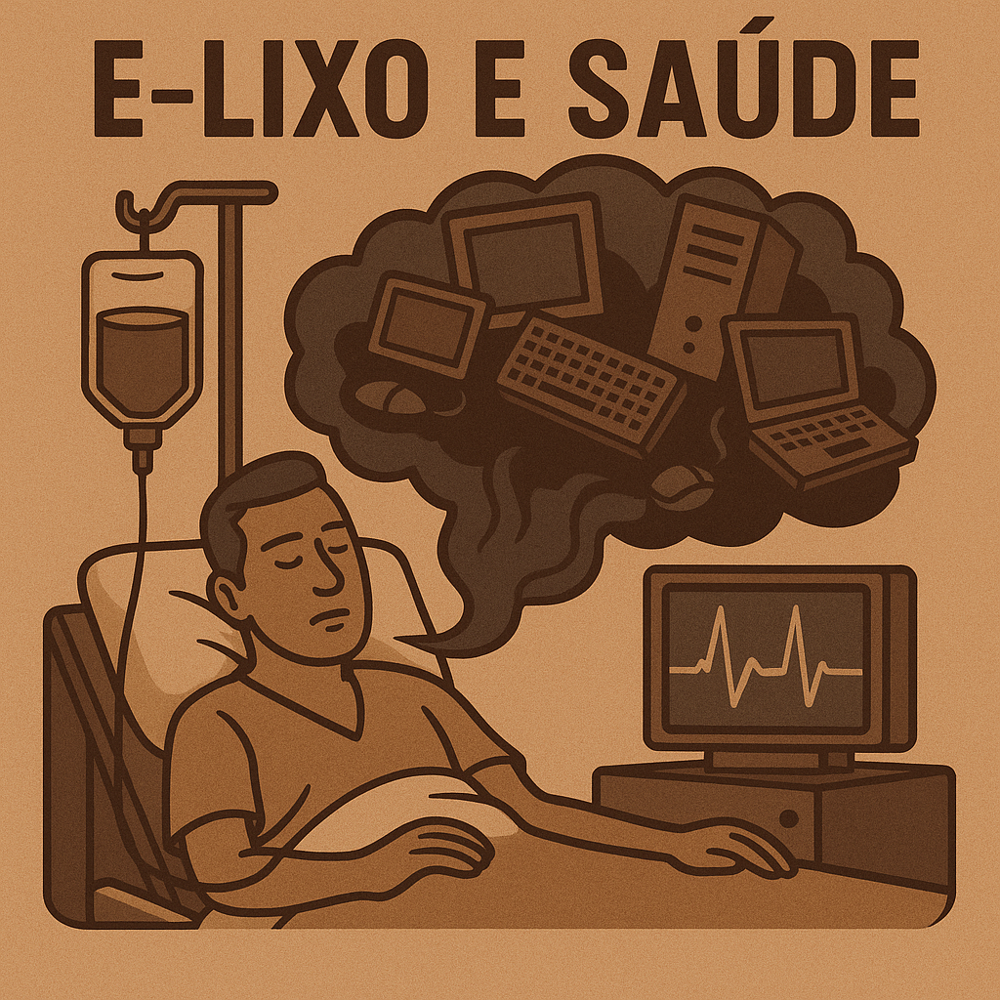

Danos que o lixo eletrônico causa na Saúde!
A exposição direta ou indireta a substâncias presentes no lixo eletrônico pode causar uma série de problemas de saúde devido ao descarte incorreto, pois o lixo eletrônico possui substâncias como chumbo, mercúrio, cádmio e arsênio, que são altamente tóxicos Esses componentes podem causar doenças graves, como câncer, problemas respiratórios, danos ao sistema nervoso, doenças renais e até distúrbios hormonais.
Estudos mostram que trabalhadores em aterros ou crianças que vivem próximos a lugares de descarte irregular de lixo eletrônico estão mais propensos a desenvolver doenças ao longo do tempo
Voltar ao início